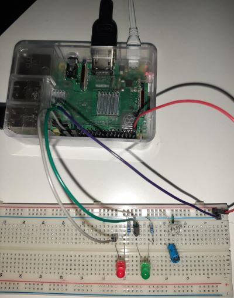

On this page you will find all the projects that I participated in with the DigiFab course. Hope you like it and Please contact
me if you have any questions or comments
Raspberry Pi
The Raspberry Pi is a device similar to the Arduino, but it is more advanced and need mor power. In addition, it includes a built-in wireless
network and Bluetooth, so there are many projects that can be implemented on the Raspberry Pi that may need an Internet connection. One of the most
important and most used projects for Raspberry Pi is a simple web server where one can make the website available to the world. The Raspberry Pi
can also broadcast a radio signal by downloading a special library. And many other projects.
In this project we will design a simple project consisting of a light sensor in addition to an LCD screen. When you turn on the light, the
word "Welcome" appears on the screen, in addition to the clock, and green led will be turn on. in the dark will red led turn on and will write sleep on
screen. I will divide the project into two parts and then merge them.
COMPONENTS AND SUPPLIES
Raspberry Pi
Potentiometer
LCD (Liquid Crystal Display)
Capacitore 1μF 3V
2 LEDs
2 Resistors 220
Photoresistor
Jumper wires
First part:
I will divide the project into two parts and then merge them. I will start with the light
sensor and the green/red light. I will connect the cables as shown in the image below.

As for the code, I will import two libraries (LightSensor, LED from gpiozero lib) and the code will be as follows
from gpiozero import LightSensor, LED
sensor = LightSensor(18)
red = LED(16)
green = LED(12)
red.on()
green.off()
while True:
sensor.wait_for_light()
red.off()
green.on()
sensor.wait_for_dark()
red.on()
green.off()
Second part:
In this section I will connect the LCD screen as shown in the image
As for the code, I will import two libraries (CharLCD from RPLCD and GPIO from RPi) and the code will be as follows